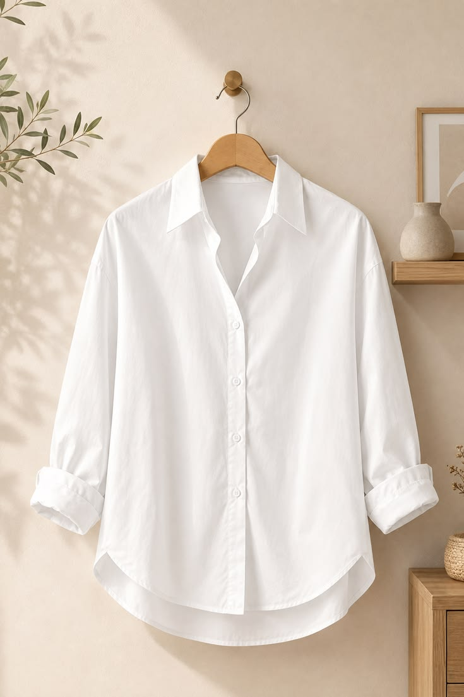

Premier drop
La chemise
Les Patronnes
Une chemise légère et affirmée, imaginée pour accompagner les journées de marché comme les rendez-vous de la ville. Quatre coloris pour faire circuler Les Patronnes partout.
Choisir un coloris Blanc coton
Choisir une taille XS
- Coupe
- Unisexe, coupe ample
- Matière
- Coton léger
- Finition
- Col classique et boutons ton sur ton
- Tailles
- XS à 3XL
DisponibilitéPrécommande bientôt
Être informé·e du lancement Retrait à Cotonou et livraison à venir. Les bénéfices participent au rayonnement du projet Les Patronnes.